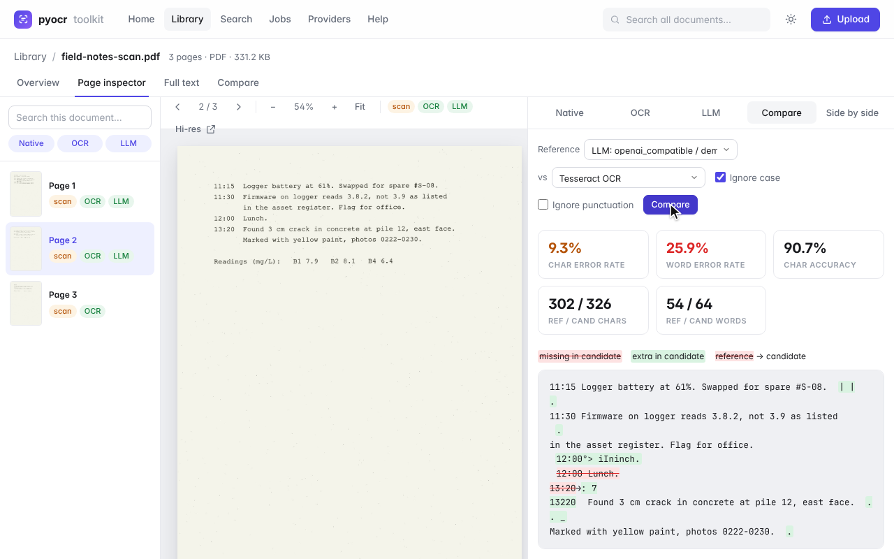
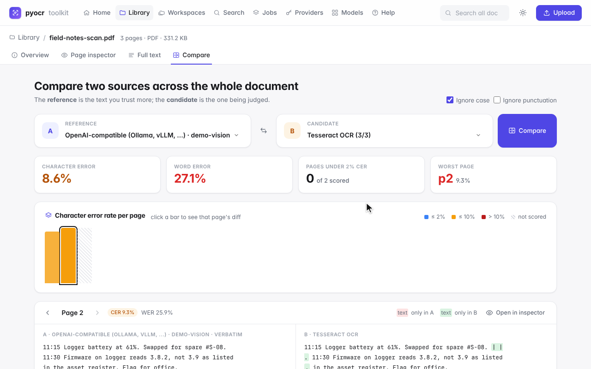

Native text
What the file already contains
Text embedded in the PDF, read with PyMuPDF. Exact and instant for born-digital files.
- Perfect on born-digital PDFs
- Scans have none; broken font maps give gibberish
Open source · Apache 2.0 · Runs locally
Many GenAI pipelines start with “get the text out of this document”. pyocr-toolkit shows you that step page by page: the file's embedded text, Tesseract OCR and a vision LLM's transcription, side by side, with error rates and word-level diffs.
$ pipx install pyocr-toolkit

Each one fails differently. Seeing them side by side is how you find out which to trust.
Text embedded in the PDF, read with PyMuPDF. Exact and instant for born-digital files.
The page is rendered at 300 DPI and recognised from pixel shapes, with a box for every word.
Claude, GPT, Gemini, Azure or a local model reads the image with a strict “don't correct” prompt.
Extract one page, a range like 1-5,9, or everything, as a background job with progress and token usage.
Character and word error rate (CER/WER) per page and per document, with a clickable chart that opens on the worst page.
See exactly which words one source dropped, added or changed. Works for OCR vs LLM, native vs LLM, or model vs model.
Search all documents and every source at once. OCR hits are highlighted right on the page image.
Clean text as TXT, Markdown, JSON or JSONL, ready for RAG and ingestion. From the UI or the CLI.
Files stay on your disk. A page image goes to an LLM only when you start a transcription, and only to the provider you pick.
Recordings of the real app on demo documents. The LLM in them is a local stand-in, so they can be remade without an API key.
Pick a reference (the text you trust more) and a candidate. You get document-level CER and WER, a bar per page coloured by how bad it is, and an aligned diff of the selected page.
Here Tesseract is scored against an LLM's transcription of a scan: it read B1 as
Bl and 13:20 as 13220. Page 3 has no LLM text yet, so it isn't scored.
The page image next to its native, OCR and LLM text. Run OCR or an LLM on just this page, diff any two sources, or open Side by side to see all three in synced columns.
This page is a scan: it has no embedded text, so it is flagged scan and OCR fills the gap.
Keyboard: ← → / 1–5 t o.
Every document with a coverage bar for each source, so you can see at a glance which pages still have no text. Filter by status or file name.
Case-insensitive search across all documents and every source. Phrases match across line breaks, and each hit says which source it came from.
Drop a file and pick an engine. Extraction runs as a background job, page by page, with progress and token usage, and every page's text is ready to read, compare or export.
This is a scanned invoice, so Tesseract does the reading.

Python 3.10+. Tesseract is optional but recommended: it enables the OCR source.
pipx install pyocr-toolkitpython -m venv .venv
source .venv/bin/activate
pip install pyocr-toolkitgit clone https://github.com/utkarsh5026/pyocr
cd pyocr && cp .env.example .env
docker compose up -d# write a .env template, then add the API keys you have
$ pyocr init
# check Tesseract, providers and the data folder
$ pyocr doctor
# start the app on http://127.0.0.1:8000
$ pyocr serve --open$ pyocr extract report.pdf --engine llm -p anthropic \
--pages 1-5 --format jsonl -o report.jsonl
$ pyocr extract scan.tiff --engine ocr --format md
$ pyocr extract born-digital.pdf --engine native
$ pyocr compare scan.pdf -p openai -m gpt-6.2-solsudo apt-get install tesseract-ocr tesseract-ocr-eng # Debian / Ubuntu
brew install tesseract # macOS
choco install tesseract # Windows (or the UB Mannheim installer)Set keys in .env. They stay on the server and are never sent to the browser.
ANTHROPIC_API_KEYOPENAI_API_KEYAZURE_OPENAI_*ANTHROPIC_FOUNDRY_*GEMINI_API_KEYOPENAI_COMPATIBLE_BASE_URLInputs: PDF, XPS, EPUB, CBZ, MOBI, FB2, SVG, PNG, JPEG, TIFF (multi-page), BMP, GIF, WebP and anything else PyMuPDF opens.
A PDF page is a list of drawing instructions (“glyph 37 at (72, 700)”). Born-digital files map each glyph back to a character, so the text can be rebuilt exactly. A scan is only a picture, so it has none.
The page is rendered to pixels at 300 DPI and Tesseract recognises characters from their shapes, reporting a box for each word. That is why search can highlight OCR hits on the page.
The page image goes to a vision model with a strict “transcribe, don't correct” prompt. It reads in context, so it is strong on hard pages, but it can “fix” typos, which the diff view exposes.
Edit distance is the minimum number of character insertions, deletions and substitutions that turn one text into the other. CER = edits ÷ reference characters; WER is the same count over words.
the cat satthe bat satWhitespace is normalised first, because line breaks aren't reading errors. Disagreement between two engines is not proof of error: compare against a born-digital PDF's native text when you need ground truth.
$ pipx install pyocr-toolkit && pyocr serve --open